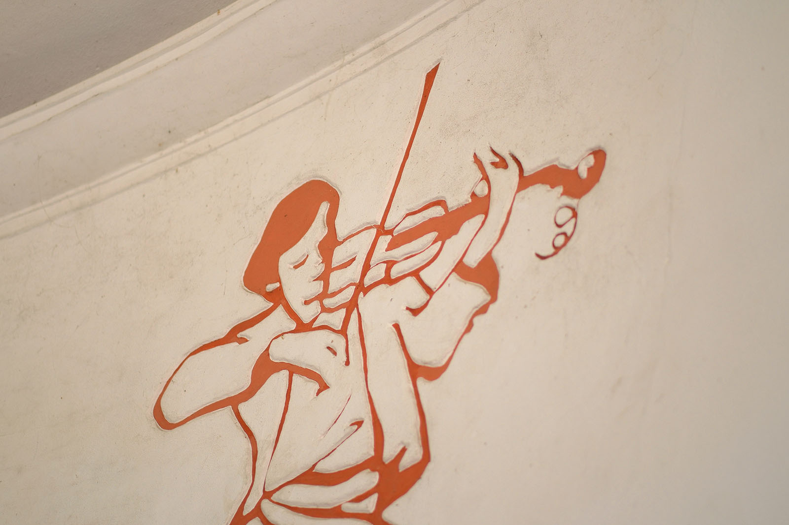
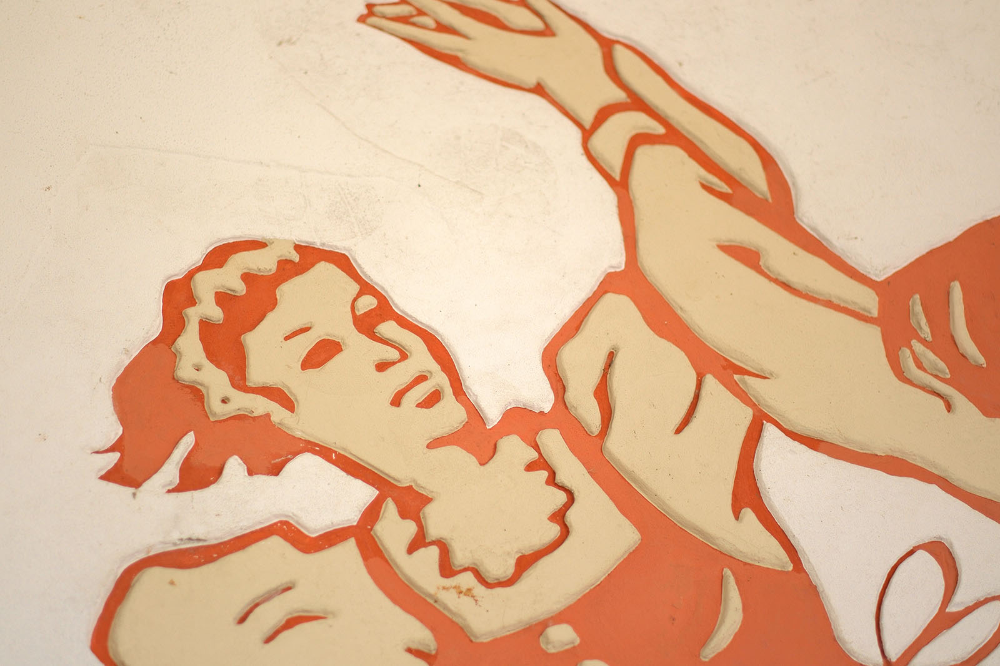
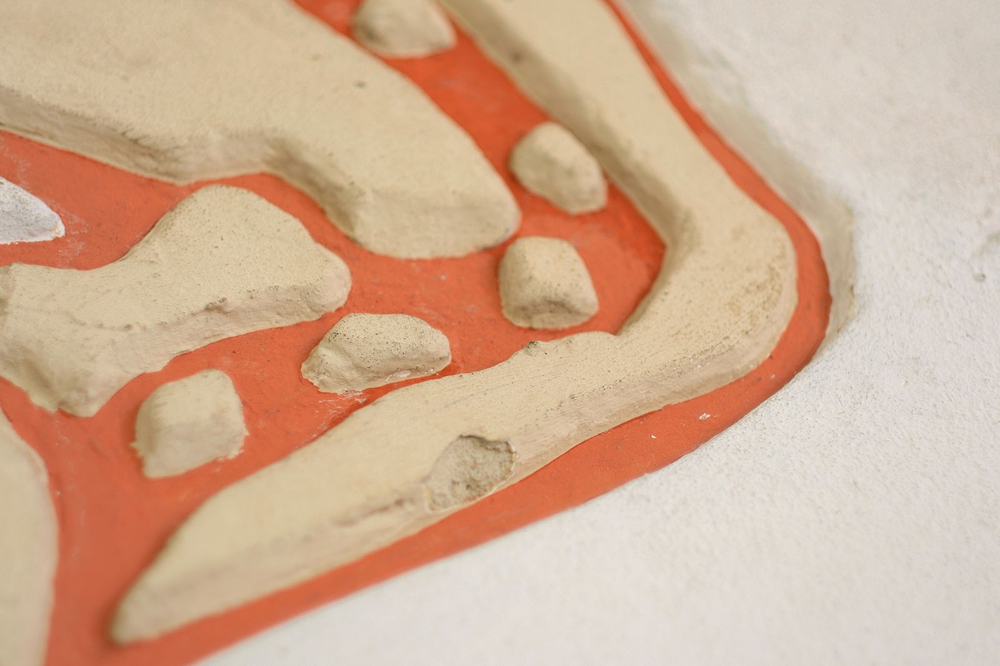
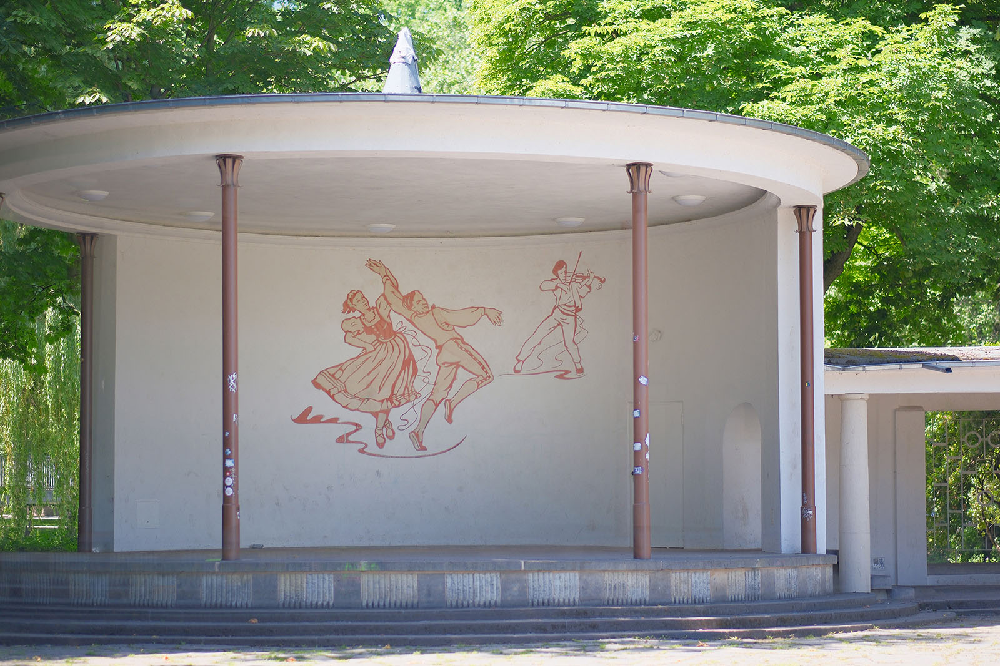

Recherche und Werkbeschreibung: Roman Pilz. Fotografien: Frank Krüger. Text und Bild wechseln sich wie in einem Magazin ab. Ein Klick auf ein Bild öffnet die Großansicht.
Der Maler Rudolf Kraus spezialisierte sich in der Nachkriegszeit in Chemnitz besonders auf die künstlerische Ausgestaltung von Neubauten. Er gestaltete Kindergärten, Kulturhäuser, Bildungseinrichtungen und Betriebe mit Wandbildern, die sich thematisch an der Funktion der jeweiligen Orte orientierten. Märchenbilder für die Kleinen, Wissenschaftler, Handwerk und Industrie für die Werktätigen oder Trachten, Land und Leute für die Erholungsbedürftigen. Besonders in den 1950er Jahren, als der Wiederaufbau der weitflächig zerstörten Stadt Fahrt aufnahm, erhielt der Künstler viele öffentliche Aufträge.
Rudolf Kraus wurde 1907 in Trautenau (Nordböhmen in Österreich-Ungarn, heute: Tschechische Republik) geboren und verstarb 1988 in Crimmitschau. Kraus studierte von 1926 bis 1928 an der Staatlichen Akademie für Kunst und Kunstgewerbe Breslau. Seit 1929 lebte und arbeitete er in Chemnitz, wo er 1930 auch eingebürgert wurde.
Ab 1936 arbeitete er als freischaffender Künstler und war Mitglied im Verband Bildender Künstler der DDR. Als Maler schuf Kraus vor allem Landschaftsansichten und Darstellungen des volkstümlichen Lebens. Er fertigte auch zahlreiche Kunstwerke am Bau – Wandmalereien, Reliefs und Sgraffiti.
In Chemnitz gestaltete er beispielsweise die Sonnenuhr des Kindergartens an der Wiesenstraße und die Fassade des Universitätskindergartens an der Reichenhainer Straße (Märchenfiguren) sowie weitere Wandbilder für Neubauten der Technischen Universität. In Freiberg gestaltete er auch ein großes Graffito am Haus des Malers Karbe. Viele seiner Arbeiten, beispielsweise am Rosenhof oder an der Straße der Nationen, gingen allerdings auch durch spätere Umbauarbeiten verloren.
Seine Werke wurden vor allem in den 1950er und 1960er Jahren regelmäßig in regionalen Kunstausstellungen gezeigt.
So wurde auch die Verschönerung der Schloßteichinsel 1954 mit der Planung des Chemnitzer Architekten Rudolf Weiser, dem Mann der später auch den Stadthallenkomplex und das Haus der Staatsorgane verantwortete, in Angriff genommen. Ein Musikpavillon mit Laubengang sollte die Nachfolge des im Krieg zerstörten, 1888 vom Verschönerungsverein der Stadt an der Promenadenstraße errichten Vorgängerbaus wieder aufnehmen und Platz für kulturelle Veranstaltungen bieten. Anlass dafür gab es genug: Seit 1949 fanden regelmäßig die Schloßteichfestwochen statt, große Radsportveranstaltung waren zu Gast und Messen, Kongresse oder der Gondelbetrieb brachten zahlreiche Besucher in das Naherholungsgebiet.
Kraus wurde am Ende des Neubaus beauftragt, der weißen Wand des überdachten Bühnenraums Leben einzuhauchen. In der von ihm gerne angewandten Sgrafitto-Technik, bei der durch Kratzen und Streichen farbiger Putze Bilder oder Dekore direkt an Gebäudewänden aufgebracht werden können, kreiert er eine Komposition zum Thema „Musik“.

Solche „Putzbilder“ zeichnen sich üblicherweise durch einen starken Farbkontrast und den Einsatz weniger Farben aus. So auch Rudolf Kraus’ „Tanzendes Paar und Geiger“. Die Figuren sind ganz in abgetöntem Rot und Gelb gehalten und sollen zum Tanz und Mitmachen animieren.
Das in folkloristische Trachten gekleidete Paar bewegt sich in der Rundung des Raums zu den Klängen eines Geigers. Die Beine und Stoffbänder der Tanzenden fliegen in die Höhe. Der Mann und die Frau drehen sich um ihre Achsen und selbst der Geiger scheint breitbeinig mit seinen Tönen mitzuschwingen.

Die Figuren sind grafisch reduziert, wie beim Holzschnitt, mit roten, geschwungenen Konturen und gelb gefüllten Flächen. Der Schattenwurf der Gestalten schlängelt sich unter den Füßen, ähnlich wie die Bänder, und unterstreicht so die starke Dynamik der Figurengruppe.
Angestoßen vom Engagement einer 2014 gestarteten Bürgerinitiative inklusive Spendensammlung, beschloss die Stadt die Instandsetzung des Pavillons mit dem zuvor verdeckten Wandbild. Die 2019 begonnen Arbeiten nach denkmalpflegerischen Kriterien wurden 2020 fertiggestellt und kosteten insgesamt 580.000 Euro.

Die musikalische Insel
Das Wandrelief „Tanzendes Paar und Geiger“ (1955) im Schloßteich-Pavillon von Rudolf Kraus
